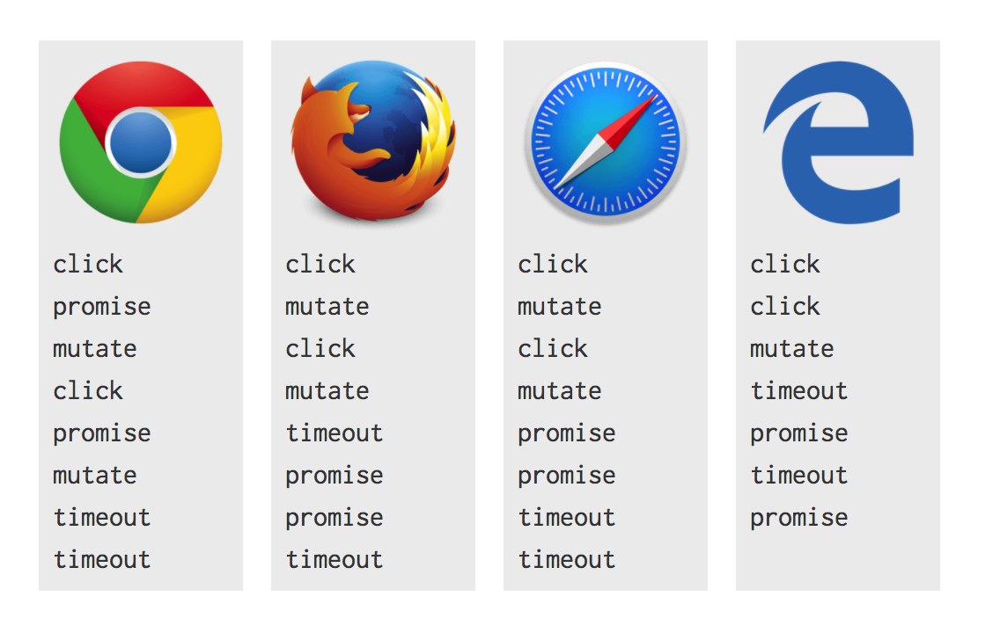
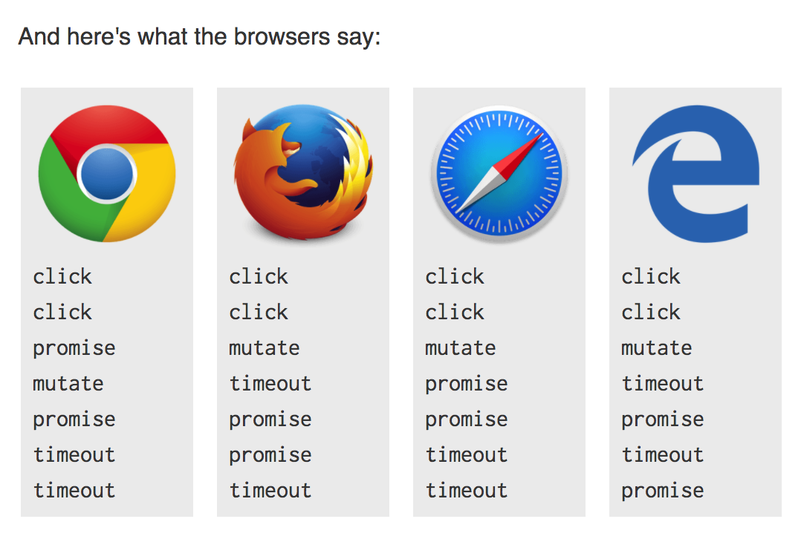

NOTE for: Tasks, microtasks, queues and schedules
This is the note for This Article And Thanks for Author
First let’s take a look with the code:
console.log('script start') |
and result:
script start |
Microsoft Edge, Firefox 40, iOS Safari and desktop Safari 8.0.8 log setTimeout before promise1 and promise2 - although it appears to be a race condition. This is weird, as firefox 39 and Safari 8.0.7 get it consistently right.
Why this happens
This is something about event loop handles tasks and microtasks.
Each thread gets its own event loop, so such web worker gets its own, so it can execute independently communicate. The event loop runs continually, evecuting any tasks queued. An event loop has multiple task sources which guaratees evecution order within that source, but the browser gets to pick which source to take a task from on each turn of the loop. This allows the browser to give preference to performance sensitive task such as user-input.
Tasks: scheduled so the browser can get from its internals into JavaScript/DOM land and ensures these actions happen sequentially. Between tasks, the browser may render updates. Getting from a mouse click to an event callback requires scheduling a task, as does parsing HTML, and setTimeout
setTimeout waits for a given delay then schedules a new task for its callback. This is why setTimeout is logged after script end, as logging script end is part of the first task, and setTimeout is logged in a separate task.
Microtasks: usually scheduled for things that should happen straight after the currently executing script, such as reacting to a batch of actions, or to make something async without taking the penalty of a whole new task. The microtask queue is processed after callbacks as long as no other JavaScript is mid-execution, and at the end of each task. Any additional microtasks queued during microtasks are added to the end of the queue and also processed. Include mutation abserver callbacks, and promise callbacks.
Promise settles(settled) -> queues a microtask for its reactionary callbacks. (ensures promise callbacks are async even if the promise has already settled).
So calling .then() against a settled promise immediately queues a microtask. This is why promise1 and promise2 are logged after script end, as the currently running script must finish before microtasks are handled. promise1 and promise2 are logged before setTiemout, as microtasks always happen before the next task.
Summary
- Tasks: Scheduled so the browser can get from its internals into JavaScript JavaScript/DOM land and ensures theses actions happen sequentially. Between tasks, browser may render updates, Geting from a mouse to an event callback requires scheduling a task, as does parsing HTML, and setTimeout
- Microtasks: Scheduled for things taht should happen straight after the currently executing script.
- JS stack: JS execute stack.
What are some browsers doing differently?
Some browsers log script start, script end, setTimeout, promise1, promise2. They’re running promise callbacks after setTimeout. It’s likely that they calling promise callbacks as part of a new task rather than as a microtask.
It’s work because promises come from ECMAScript rather tan HTML. ECMAScript has the concept of “jobs” which are similar to microtasks, but the relationship isn’t explicit aside from vague mailing list discusions.
Treating promises as task leads to performance problems, as callbacks may be unnecessarily delayed by task-related things such as rendering. It also causes non-determinism due to interaction with other task sources, and can break interactions with other APIs.
How to tell if something uses tasks or microtasks.
Testing see when logs appear relative to promises & setTimeout, although you’re relying on the implementation to be correct.
The certain way, is to loop up the spec:
In ECMAScript land, they call microtasks jobs. In step 8.a of PerformPromiseThen, EnqueueJob is called to queue a microtask.
Level 1 bossfight
<div class="outer"> |
Given the following JS, what will be logged if I click div.innter?
// Let's get hold of those elements |
Result is different in different browser

Who’s right?
Dispatching the click event is a task. Mutation observer and promise callbacks are queued as microtasks. The setTimeout callback is queued as a task.
First task:
Dispatch clicktask- Log
click - Add task
setTimeout callback - Then
Promise thenwill be declare in Microtasks. Mutation queuesa microtask to handle observersonClickevent finish in JS stack
It’s time to execute microtasks
- First
Promise then callbackwill be execute - Log
promise - Then
Mutation callbackexecute - Log
mutate
Because event bubbles, so our callback is called again for the outer element
- Log
click - Add task
setTimeout callback - Add microtask
Promise then - Add microtask
Mutation callback - Microtask
Promise thenwill be execute - Log
promise - Microtask
Mutation observerswill be execute - Log
mutate - Then tasks
Dispatch clickclear, Move tosetTimeout callbacktask - Log
setTimeout - Move to next
setTimeout callbacktask - Log
setTimeout
This is the right way in Chrome. That microtasks are processed after callbacks (as long as no other JavaScript is mid-execution), It may was limited to end-of-task. This rule:
If the [stack of script settings objects](https://html.spec.whatwg.org/multipage/webappapis.html#stack-of-script-settings-objects) is now empty, [perform a microtask checkpoint](https://html.spec.whatwg.org/multipage/webappapis.html#perform-a-microtask-checkpoint)
- [HTML: CLeaning up after a callback](https://html.spec.whatwg.org/multipage/webappapis.html#clean-up-after-running-a-callback) step 3
A microtask checkpoint involves going through the microtask queue, unless we;re already processing the microtask queue. Similarly, ECMAScript says this of jobs:
Execution of a Job can be initiated only when there is no running execution context and the execution context stack is empty...
- ECMAScript: Jobs and Job Queues
What did browsers get wrong?
Firefox and Safari are correctly exhausting the microtask queue between click listeners. as shown by the mutation callbacks, but promises appear to be queued differently. This is sort-of excusable given that the link between jobs & microtasks is vague, but I’d still expect them to execute between listener callbacks.
With Edge we’ve already seen it queue promises incorrectly, but it also fails to exhaust the microtask queue between click listeners, instead it does so after calling all listeners, which accounts for the single mutate lig after both click logs.
Level1 boss’s angry older brother
Same example from above, If we execute:
inner.click() |

Why is it different?
- Run script
- inner.click() will be executed and JS stack boot into
onClick - Log
click setTimeouttask been declared- Microtasks
Promise thenhas been created - And add Microtasks
Mutation abservers
After this, we cannot process microtasks, because JS stack is not empty
- Log
click setTimeouttask been declared- Microtasks
Promise thenhas been created
And at this time, we cannot add another mutation microtask as one is already pending.
Script is gone, we process microtasks
- Microtasks
Promise thenexecuted and logPromise - Microtasks
Mutation observersexecuted and logMutate - Microtasks
Promise thenexecuted and logPromise
Run script task is finished, move to execute two setTimeout callback task
- Task
setTimeout callbackand logtimeout - Task
setTimeout callbackand logtimeout
Previously, this meant that microtasks run between listener callbacks, but .click() causes the eent to dispatch synchronously, so the script that calls .click() is still in the stack between callbacks. The above rule ensures microtasks don’t interrupt JavaScript that’s mid-execution.
This means we don’t process the microtask queue between listener callbacks, they’re processed after both listeners.
Summary
- Task execute in order, and the browser may render between them
- Microtasks execute in order, and are executed:
- After every callback, as long as no other JavaScript is mid-execute
- At the end of each task
Other Funny Thing
- Great talk at JSConf on the event loop
- IndexedDB
- Living Standard
- ECMAScript® 2015 Language Specification